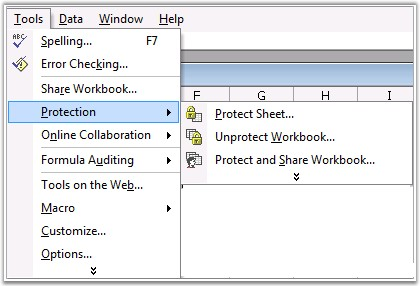
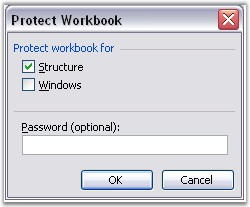
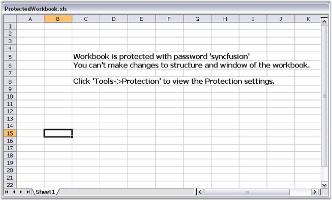
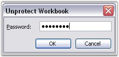

MS Excel provides the creator of a workbook, the ability to protect the Structure and Windows of a workbook with a password. It includes the following options.
· Protecting Structure
Worksheets and chart sheets in a workbook with protection, cannot be moved, deleted, hidden, unhidden, or renamed, and new sheets cannot be inserted.
· Protecting Windows
Windows in a workbook with protection, cannot be moved, resized, hidden, unhidden, or closed. Windows in a workbook with protection, are sized and positioned the same way, each time the workbook is opened. This can be done by selecting Protection option from the Tools menu in Excel.

Figure 144: Tools menu - Protection

Figure 145: Protect Workbook Dialog Box
Protect method of IWorkbook interface provides options to protect and unprotect documents with password in XlsIO. You can also set/reset the Window and Structure option in this method.
Following code example illustrates how to protect a workbook with a password.
|
[C#]
// Protect Workbook. workbook.Protect(isProtectWindow, isProtectContent, "syncfusion");
// Unprotect workbook. // Opening a Existing(Protected) Workbook. IWorkbook workbook = application.Workbooks.Open(@"ProtectedWorkbook.xls");
// Unprotecting( unlocking) Workbook by using the Password. workbook.Unprotect("syncfusion"); |
|
[VB.NET]
' Protect Workbook. workbook.Protect(isProtectWindow, isProtectContent, "syncfusion")
' Unprotect workbook. ' Opening a Existing(Protected) Workbook. Dim workbook As IWorkbook = application.Workbooks.Open("ProtectedWorkbook.xls")
' Unprotecting (unlocking) Workbook by using the Password. workbook.Unprotect("syncfusion"); |
Following illustration shows a protected document with the sheet max/close/min button disabled, also no sheets can be added/removed to the document.

Figure 146: Protected Workbook
UnProtecting the Workbook
You can unprotect or remove protection for a document by entering the password in the Unprotect Workbook dialog box in MS Excel, as shown in the following screen shot.

Figure 147: Unprotecting Workbook by entering Correct Password
XlsIO also provides support to unprotect a workbook with password by using the UnProtect method.
|
[C#]
// Unprotect workbook. // Opening an Existing (Protected) Workbook. IWorkbook workbook = application.Workbooks.Open(@"ProtectedWorkbook.xls");
// Unprotecting (unlocking) Workbook by using the Password. workbook.Unprotect("syncfusion"); |
|
[VB.NET]
' Unprotect workbook. ' Opening an Existing (Protected) Workbook. Dim workbook As IWorkbook = application.Workbooks.Open("ProtectedWorkbook.xls")
' Unprotecting (unlocking) Workbook by using the Password. workbook.Unprotect("syncfusion"); |